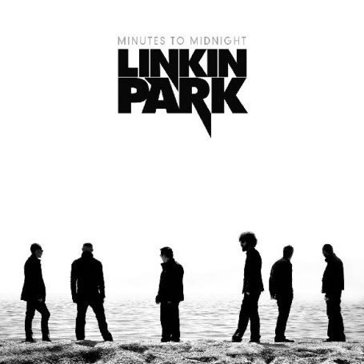
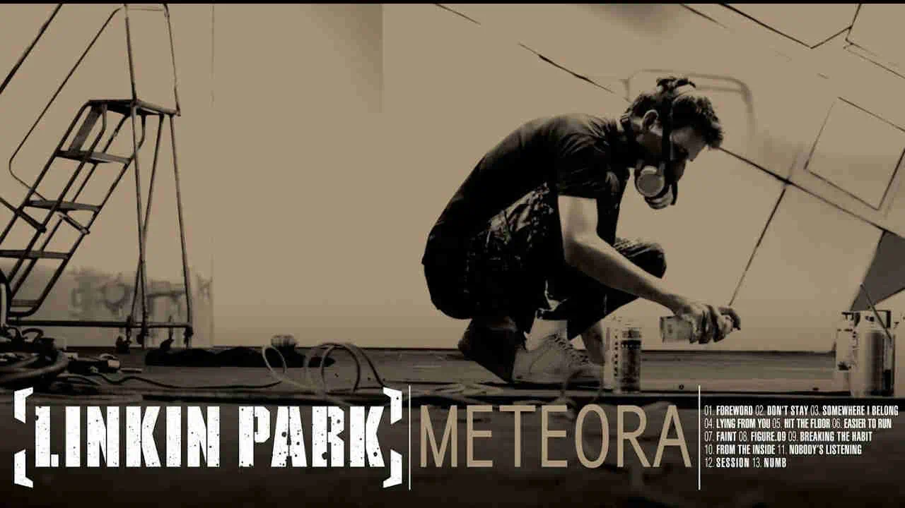

|
|
 |
 |
 |
Desde sua formação em 1996, o Linkin Park conquistou o coração de milhões de fãs em todo o mundo com sua poderosa fusão de rock, rap e elementos eletrônicos. Originária de Agoura Hills, Califórnia, a banda rapidamente se destacou pela sua sonoridade única e letras emocionalmente carregadas.
Com o lançamento de seu álbum de estreia, "Hybrid Theory", em 2000, o Linkin Park estabeleceu-se como uma das bandas mais influentes da década. Hits como "In the End" e "Numb" se tornaram hinos para uma geração inteira.
 |
Ao longo dos anos, a banda continuou a evoluir, explorando novos sons e abordando temas complexos em álbuns aclamados pela crítica, como "Meteora" e "Minutes to Midnight". Sua música ressoa com uma ampla gama de ouvintes, transcendendo barreiras culturais e linguísticas.
|  |  |
Sob a liderança de Chester Bennington e Mike Shinoda, o Linkin Park deixou um legado duradouro na indústria musical, inspirando milhões com sua autenticidade e honestidade emocional. Suas letras refletem as lutas internas e externas enfrentadas pela juventude moderna, tornando-os uma voz poderosa para uma geração.
Apesar da trágica perda de Chester Bennington em 2017, o Linkin Park continua a ser uma força vital na música, com sua influência sendo sentida em todo o mundo. Sua jornada musical está longe de terminar, pois seu legado vive através de sua música atemporal e impactante.